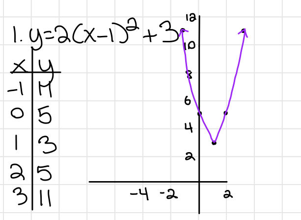
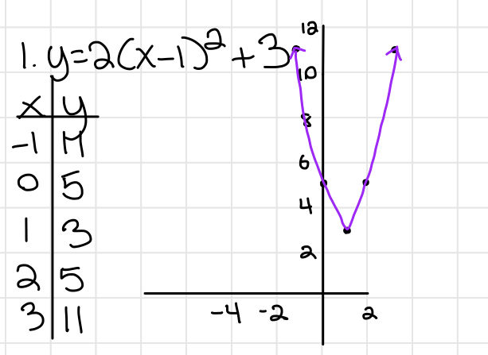

And
- The value of x is in between two values. x has to satisfy BOTH inequalities
- Ex. -2 < x < 3
Algebra 2 may seem scary, but don't worry, we will help you succeed :).
Many of the concepts in Algebra 1 are in Algebra 2 or in trigonometry. If you can't find something on this page, it is most likely on the Algebra 1 page or the Trigonometry page.
Graph of an inequality on a coordinate plane

Step function


 



i = √-1; i2 = -1